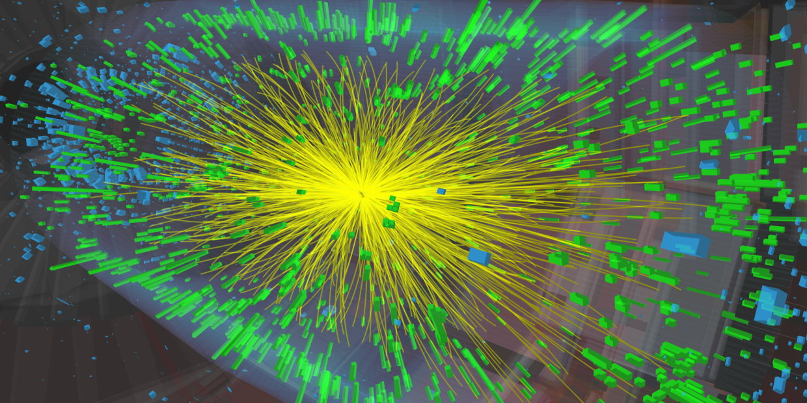

The strong force is the strongest of the four fundamental forces of nature, and is responsible for holding together the nuclei of atoms. Although the theory of the strong force, quantum chromodynamics (QCD) is well-known, many fundamental quantities are still difficult to calculate from first principles. Furthermore, systems interacting via the strong force have been shown to exhibit emergent properties that are not obvious results of the underlying theory. I aim to provide experimental data that helps us understand how these fascinating behaviors arise from QCD.
My research is highly collaborative. As such, I am a member of the CMS Collaboration, which is an international group of around 2000 physicists that operate the CMS experiment, a particle detector at the Large Hadron Collider (LHC) at CERN, in Geneva, Switzerland. CMS is one of the most complex scientific aparatuses designed by mankind - it's 50 feet tall, weighs 14,000 tons, generates a magnetic field as powerful as an MRI machine with a magnet that is cooled to 4 Kelvin (-450 degrees Fahrenheit!), has around 100 million electronic channels, and outputs around 20 Gb of data every second! That means my colleagues and I collect and examine petabytes of data every year! The CMS detector is shown in the nearby image. See if you can find the humans in the picture to give you a sense of how big it is! You can read more about what I use CMS to study, as well as my efforts to develop future particles detectors, below.

The Quark-Gluon Plasma
What happens when you get two nuclei moving at nearly the speed of light and smash them together? You create a quark-gluon plasma, the hottest man-made form of matter, which behaves like a 'perfect' liquid and is predicted to have existed right after the Big Bang.

Small Collision Systems
Some properties of the quark-gluon plasma have been spotted in smaller systems, like proton-ion, photon-ion, and proton-proton collisions. Are we creating a small 'droplet' of QGP, or is there something else going on? These systems can also be used to study the initial state of ion collisions.

The CMS MTD Upgrade
The CMS MTD Endcap Timing Layer upgrade is a new particle detector to be installed for Run 4 at the Large Hadron Collider. Its fast, radiation hard sensors will add additional particle identification capabilities to CMS to help unlock the secrets of the strong force.

The Electron-Ion Collider
The electron-ion collider is a new particle accelerator planned to be built on Long Island, New York. Work is already underway to make a particle detector, ePIC, that will be used for precision measurements of the inner structure of nuclei, searches for gluon saturation, and much more.
- © Austin Baty
- Design: HTML5 UP